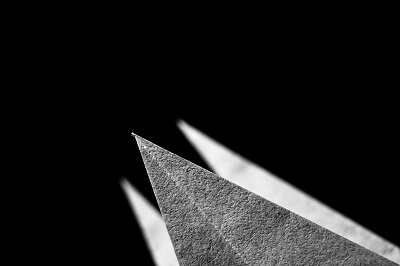
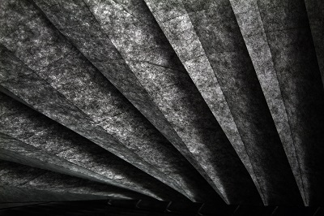
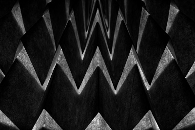
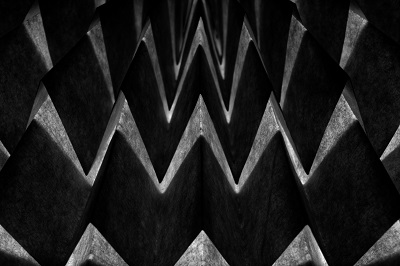
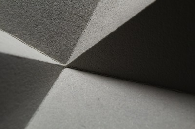

I always loved making photos, since when i received my first camera when i was 12.
Since then I looked at the world in a different way, always looking for interesting lines,
nice shadows, light games and creative prospectives.
All that can be seen in my latest project, about origami and the process of making them.
Here's a selection of my favorites
  Empty Bliss | Grass
 
Modern Times | superordination

Modern Times | superordination  Three | World Fades